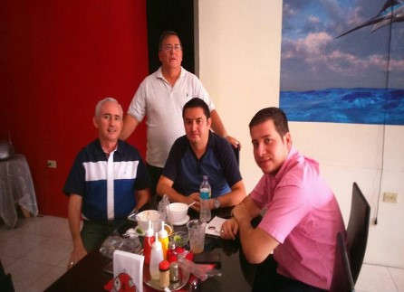

Nuestra historia
Por más de tres años empresas y particulares han hecho cientos de pedidos de estos ceviches. Hoy oficialmente los puedes disfrutar en nuestro cómodo local o solicitarlos para entrega a domicilio, a tu lugar de trabajo o a donde desees degustarlos.
Dale un gusto a tu paladar.
horoarios de atención
- lunes a viernes 08h00 a 14h00 y 17h00 a 20h00
- sabados 08h00 a 14h00